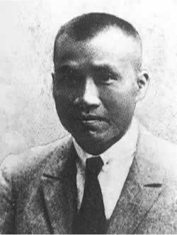

1927 · 南昌
危难之时，人民军队在枪声中诞生。从那一天起，“为人民而战”不再只是誓言，而成为一代代军人的生命方向。
2025 · 松峰岭烈士纪念馆志愿整理档案
一间山中木屋，一只旧木箱，一盏六十年未熄的信号灯。
你受李念军委托，上山清点她爷爷李长根留下的遗物。
村里人只知道他是护林员；屋里那些发黄的纸、缺角的照片和一只搪瓷杯，却把你带回了 1951 年的松峰岭阵地。
温馨提示：本作无恐怖跳吓，核心为历史记忆、承诺与传承。
结尾历史图片均采用可再分发来源，完整出处与许可见同目录 README.md。